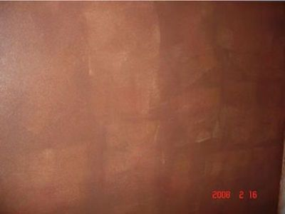
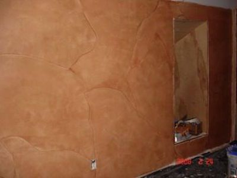

Hello, I have recently purchased The Triple S Faux System 5 piece kit.
After watching the DVD and getting everything together, I went to work on my project. After loading the faux palette and pouncing it on the wall, I then do the poofy pad in various motions to get a good color blend.
The color is cool, but, every place the faux palette hits the wall, there is a rectangle the size of the palette that is a lighter shade than the rest of the color that was spread by the poofy pad. I am using the Sherwin Williams paint and the glaze they recommended.
Do you know what is going on? Or is it the way it is. My finish is no where close to the finish on your web site. This is my second time trying this, and I understand that you guys are professionals and I won't get your finish, but this is terrible. Can you please give me more ideas?
Thank you,
John Miller
Dear John,
It's Saturday night but your letter was brought to my attention, therefore, I wanted to reply myself. I appreciate your communicating to the company your problem instead of just giving up. I would like to ask a few questions, first, so that I can better assist you. You are right, the palette's form shows on the wall. There are a few things that could be happening.
1) How did it look on your practice board? You mentioned trying twice, but did you see the same problem on the board? I never try on the wall until I get it just as I want on the board, first.
2) What ratio of glaze to paint did you use? If the glaze is drying too fast, then you are not going to get a blended look. Every glaze is different and sometimes you have to add more glaze than the usual 4 to 1. I have had to use 6 to 1 sometimes depending on the thickness of the paint. I have noticed that Sherwin Williams paint is very thick.
3) How many times did you press the palette on the wall before you began to pounce out the colors? You should only press it 2 times at the most because if not, you will not have enough time to blend the color, especially if the glaze doesn't have much open time. One woman pressed it 4 times before she pounced out the colors and she got the imprint of the palette, too. I have been doing this for 10 years and I pounce very fast, so maybe you should try pressing the palette only once and then pounce out the color with the Poofy.
4) Did you use a SATIN base coat? The only time this happened to me was when I tried to faux paint on a FLAT surface. It's nearly impossible to faux on a flat surface cause the glaze dries instantly on the wall. The fact that the imprint is lighter means that where you place the palette, it is starting to dry so when you pounce on that area, the glaze is taking off the glaze where the palette placed it on the wall. Do you understand what I mean? When the glaze is not completely dry but somewhat, then pouncing on top of that area will make the glaze come off.
I believe your situation is a mixture of some of these things I've mentioned. Not all is lost as you can go back and add another coat which should make the imprints less noticeable. Since you have already done the wall, try out a section first. Mix just 1 tablespoon of paint to 6 tablespoons of glaze. That is enough to try out a section. Don't press the palette on the wall but instead, since it is now dry, press the poofy onto the palette and then onto the wall and kind of wash the wall, pouncing it right afterwards to avoid getting the swirls. You can go to Faux Painting Knockdown to see what I mean about washing the wall. I also have a new page Faux Painting Marble that shows how to wash and pounce with the Poofy Pad.
The system is the fastest and easiest way to faux paint but you do get better with practice. The color is nice, though, as you have pointed out.
Let me know how you do. The great thing about faux painting is that it is not wallpaper and you can paint and start over. I am confident that you will give it your best shot before throwing in the towel. I will be praying for you as we pray for all our customers when we send out the package.
God bless,
Sandy Silva
President
Murals and Faux Painting, Inc.
Hey Sandy,
It looks like the the questions that you asked me on your response made me say to myself that I should not think. Have you heard the saying well I thought? Well there are a few things that I thought, even though reading and watching the information.
1) The color did not matter very much to me due to the fact the room that I am working on is My Space, you know the guys room. So no I did not do a practice board due to the fact that I did not have an sheetrock available any more. I just jumped in and THOUGHT that it's going to be fine.
2) I used 5 to one ratio and it seemed to have good open time.
3) If I tell you how many times that I actually press the palette on the wall before doing the pounce, you would just want to say no wonder you have the problems. I also pounce very fast.
4) Here goes another I THOUGHT. I thought that if my wall was white, I'll start with that. Well no, my first coat was primer then top coated with a flat white because that is what I had. It is white. Even though I did not no the importance of a satin finish. When I got your response and I read your questions I knew all of my faults.
5) Since then I repainted everything with a satin, and I am having a better time with getting the finish that I thought that only you could do. Well it's not that good, but I am satisfied. I still press the the palette alot 6-7 times in a odd pattern. Maybe 4 times straight across the top of the wall, 2 times directly under that and 3-4 times under that. Then I take the poofy and kinda do a poofy smear job. By that I mean drag the poofy pad in a zig zagging motion down the wall in pattern in which I may want the cracked line look to be. Then I move to another section a little bit further away, in order for that to dry some. Then I come back and make my line by carefully overlapping the odd shape line. If that makes no sense to you, you are probably right. It works for me.
Thank you for your help. I'll send pictures.
John Miller
Hey Sandy,
Well my project is coming. You will probably see this and say to yourself my goodness this is not supposed to happen, what is this guy thinking. It looks better than the pictures reveal. The flash really shows some blotchiness and color variations.
I know this is something that you would not put in a portfolio, but this is what I have. This room will have a lot of wall hangings, such as guitars, some art work, different pictures and more guitars. So nonetheless most of this will be hidden. I chose to have the puzzled look ( or you could say a flagstone sidewalk) just to be different and it was easy to make. These walls will not win any awards or trophys, but doing this gave me the interest in this type of painting. So I did a little color washing with the Valspar products in my hall area. This was easy and fast. But after learning the lil bits with your products surely helped with knowing how glaze works. I can always use more open time. By that I mean, open time should be 40 sq.ft @ any speed you pounce or spread. This room that I am working on is a 14' x 20' with mostly 8' ceiling height in my attic. I know that this sounds kinda strange, but this is where I will have my space to study music and whatever is on the agenda. I send pics of the hall later.
See Ya,
John


(This kit includes Basic, Faux Marble, Faux Wood Kit and tools for texturing)
*FREE Priority Shipping and Color Idea E-book